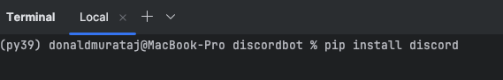
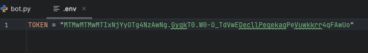
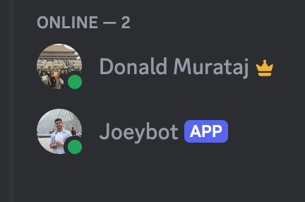
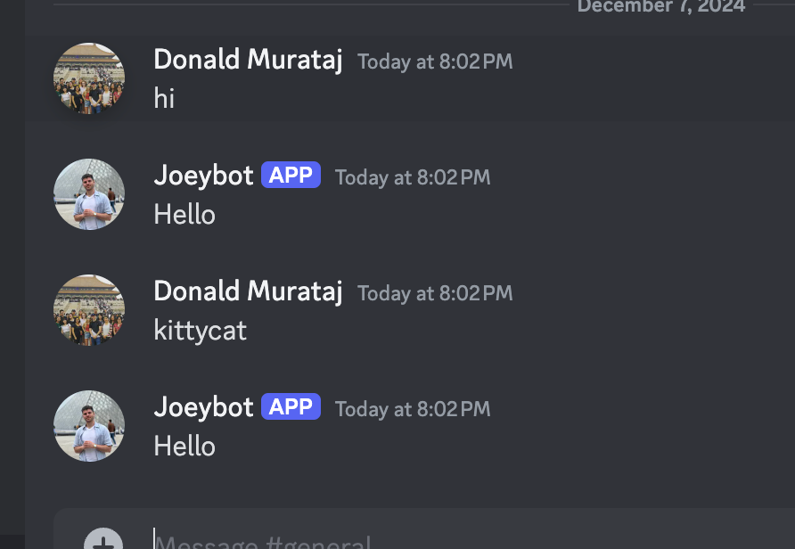

This tutorial will guide you through creating your first Discord bot. We assume you have Python installed and are using an IDE like PyCharm. If not, ensure you have Python installed from the official Python site.

Open PyCharm or whatever python IDE that you use and create a new Python project. Install the required library discord.py by going to your terminal and running:
pip install discord

You will also need to install the dotenv library if you don't already have it. This allows you to load into your python program any private things like passwords and tokens that you have saved in a .env file.
pip install python-dotenv
In your project directory, create a new file called .env to store your bot token securely:
Go back to your Discord Developer Portal and inside your app, go back into the "Bot" tab where you will generate a token to uniquely identify your bot. You do this by pressing the "Reset Token" button.

Then copy and paste this token into your .env using the syntax:
TOKEN = your_discord_bot_token

Create a file named bot.py in your project directory. Add the following code to check if all libraries were installed and the token loads correctly.
import discord
import dotenv
import os
dotenv.load_dotenv()
my_bot_token = os.getenv('TOKEN')
print(my_bot_token)
Running this code should successfully print out your discord token in the terminal. If you get an error, please chatGPT or google how to fix that error. The next step is to create an instance of the discord bot with a new set of intents.
intents = discord.Intents.default()
intents.message_content = True
bot = discord.Client(intents=intents)
Now you want to define your first bot event which is on_ready. This is where you tell you program what to do when the bot turns on. Let's just tell it to print the bot's name in the terminal.
@bot.event
async def on_ready():
print(f'{bot.user} is ready')
We still haven't called function to run the bot, so it won't turn on just yet. To get the bot to turn on, we must add the following line of code to the end of our file.
bot.run(my_bot_token)
Now try running the code. Check the messages in the terminal that will tell you when your bot is ready. After that, if you go to your discord server, you will see that the bot is online.
In its current state all the bot can do is turn on, let's get it to at least respond to messages. Let's add another discord event for on_message. This will have to come before bot.run(my_bot_token).
@bot.event
# This functions tells the bot what to do when there is a new message in the channel
async def on_message(message):
# Don't do anything, if the message sent was by the bot itself
if message.author == bot.user:
return
await message.channel.send("Hello")
Now your overall code should look as follows.
import discord
import dotenv
import os
dotenv.load_dotenv()
my_bot_token = os.getenv('TOKEN')
# You can delete this print statement as it was just to check that the token loads
print(my_bot_token)
intents = discord.Intents.default()
intents.message_content = True
bot = discord.Client(intents=intents)
@bot.event
async def on_ready():
print(f'{bot.user} is ready')
@bot.event
# This functions tells the bot what to do when there is a new message in the channel
async def on_message(message):
# Don't do anything, if the message sent was by the bot itself
if message.author == bot.user:
return
await message.channel.send("Hello")
bot.run(my_bot_token)
Now when you type anything into the discord chat, the bot will respond with "Hello".
Now that your bot is online and can at least respond to messages, you can start adding more functionality! Check out the discord.py documentation for more advanced features.
Please reach out using the contact button at the top right corner if you have any questions!